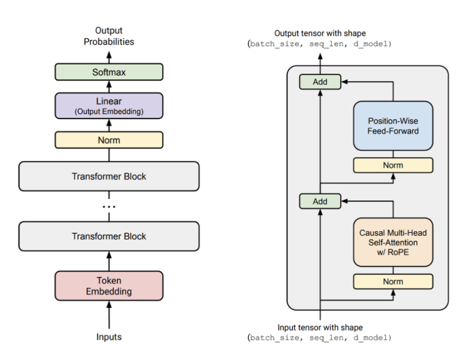

CSS 366 · Lecture 3 — Discussion
What's new in the modern transformer?
?
What updates do we have compared to the original transformer? Let's discuss everything we remember from the lecture.
Pre-Norm (instead of Post-Norm)
RMS Norm instead of LayerNorm ★
No bias in Feed-Forward layers
SwiGLU instead of ReLU ★
RoPE instead of sinusoidal positional embeddings ★
Parallel blocks instead of serial blocks